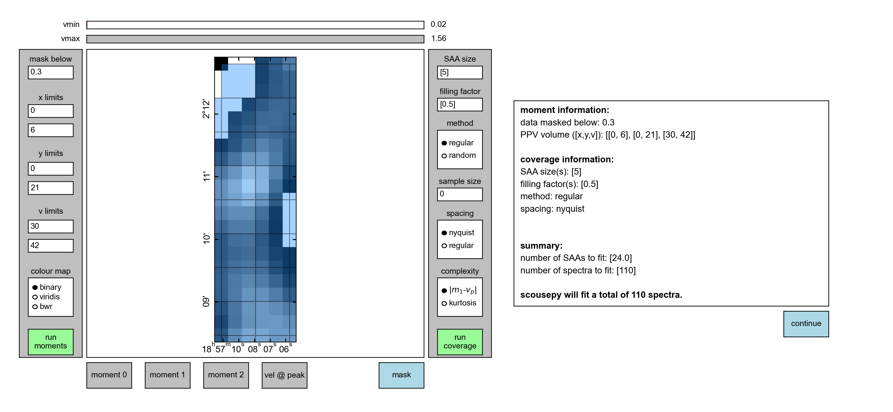
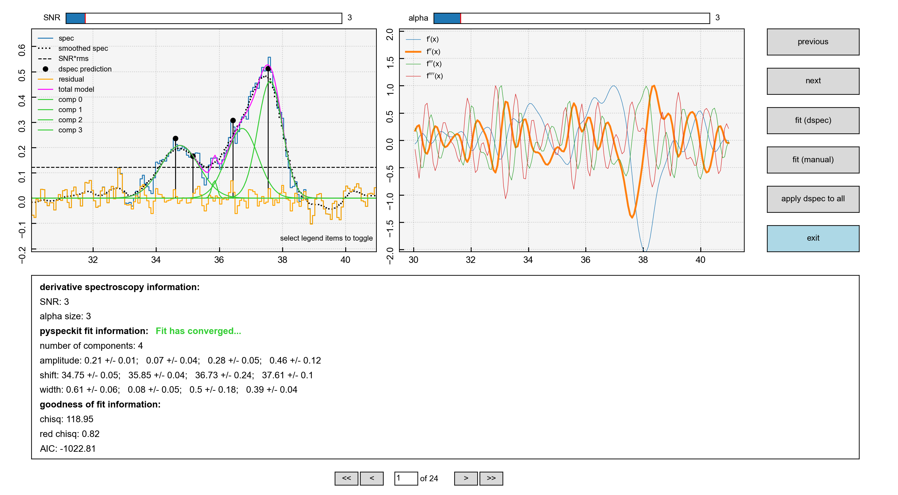

Tutorial v2.0.0¶
The aim of this tutorial is to give a basic introduction to the main workflow of
scousepy. Each stage will be described below along with some of the
important customisable keywords. All data for the tutorial can be found here, along with some example
scripts.
Data¶
This tutorial utilises observations of N2H+ (1-0) towards the Infrared Dark Cloud G035.39-00.33. This data set was first published in Henshaw et al. 2013.. These observations were carried out with the IRAM 30m Telescope. IRAM is supported by INSU/CNRS (France), MPG (Germany) and IGN (Spain). The data file is in fits format and is called
n2h+10_37.fits
An important note on this data set is that N2H+ (1-0) has hyperfine structure. For the purposes of this tutorial, we are going to fit only the isolated hyperfine component. Specific to this data set, this component is located between ~ 30-41 km/s.
Stage 0: preparation step¶
The first thing we are going to do is import scousepy using
from scousepy import scouse
Next, we want to tell scousepy where the data is and where to output the
files associated with each stage
datadir='/path/to/the/data/'
outputdir='/path/to/output/information/'
filename='n2h+10_37'
Note how the filename is provided without the .fits extension. If outputdir is
not provided scousepy will output everything to datadir by default.
Now we are going to create the configuration files
config_file=scouse.run_setup(filename, datadir, outputdir=outputdir)
This will produce a directory with the following structure
| filename
| ├── config_files
| │ ├── scousepy.config
| │ ├── coverage.config
| ├── stage_1
| ├── stage_2
| ├── stage_3
| └── stage_4
scousepy.config will have the following structure
[DEFAULT]
# location of the FITS data cube you would like to decompose
datadirectory = '/path/to/the/data/'
# name of the FITS data cube (without extension)
filename = 'n2h+10_37'
# output directory for data products
outputdirectory = '/path/to/output/information/'
# decomposition model (default=Gaussian)
fittype = 'gaussian'
# Number of CPUs used for parallel processing
njobs = 3
# print messages to the terminal [True/False]
verbose = True
# autosave output from individual steps [True/False]
autosave = True
[stage_1]
# save moment maps as FITS files [True/False]
write_moments = True
# generate a figure of the coverage map [True/False]
save_fig = True
[stage_2]
# outputs an ascii table of the fits [True/False]
write_ascii = True
[stage_3]
# Tolerance values for the fitting. See Henshaw et al. 2016a
tol = [2.0,3.0,1.0,2.5,2.5,0.5]
Each of these parameters can be edited directly before running the subsequent
stages. In particular, though scousepy performs much quicker in parallelised
mode (njobs), debugging may be easier in serial.
coverage.config will have the following structure
[DEFAULT]
# number of refinement steps
nrefine = 1
# mask data below this value
mask_below = 0.0
# optional input filepath to a fits file containing a mask used to define the coverage
mask_coverage = None
# data x range in pixels
x_range = [None, None]
# data y range in pixels
y_range = [None, None]
# data velocity range in cube units
vel_range = [None, None]
# width of the spectral averaging areas
wsaa = [3]
# fractional limit below which SAAs are rejected
fillfactor = [0.5]
# sample size for randomly selecting SAAs
samplesize = 0
# method used to define the coverage [regular/random]
covmethod = 'regular'
# method setting spacing of SAAs [nyquist/regular]
spacing = 'nyquist'
# method defining spectral complexity
speccomplexity = 'momdiff'
# total number of SAAs
totalsaas = None
# total number of spectra within the coverage
totalspec = None
Again, each of these keywords can be edited manually before running stage 1. The
GUI application of stage 1 can be bypassed using the keyword
interactive=False. T
Stage 1: defining the coverage - interactive¶
By default, scousepy will launch an interactive GUI in order to define the
coverage…

The keywords included in coverage.config are updated by interacting with the
GUI. For this particular data set we are fitting N2H+ (1-0), so the first thing
we want to do is truncate the velocity range over which we are going to perform
the fitting such that we only focus our attention on the isolated hyperfine
component. We can do this by adjusting the v limits boxes and clicking
run moments. The v limits are given in absolute units whereas the
x limits and y limits should be given in pixel units. This will result in
the following

Note how although the image itself doesn’t change much, the intensity does. This can be inferred from the sliders at the top of the GUI.
We can also apply a mask such that we only fit a portion of the data. Here I
have used a mask of 0.3 (again in absolute units, in this case K), remembering
to click run moments again,

We can inspect the mask itself by clicking on the mask button at the bottom

Next up we want to run the coverage. For this we first want to set the SAA size.
Here I have set the SAA size=5. I have also retained the default settings
for the other options, most importantly the filling factor=0.5. Clicking
on run coverage will produce the coverage map.
The remaining settings are best ignored for now, but relate to various pieces of code that are still in development. The coverage will be displayed on the image and the box to the right will now display some basic statistics. Most importantly it indicates how many SAAs are to be fit and how many spectra are included within those SAAs (and will therefore be fit during stage 3).
Done correctly, you should see something like this
{kind=link}
Hitting continue will process the coverage and extract the spatially averaged
spectra from each of the spectral averaging areas

Stage 1: defining the coverage - non-interactive¶
Note that the coverage.config file can be edited directly to perform the
computation of the coverage in a non-interactive way. Personally, I have found
this helpful when fitting multiple cubes. In a separate code, I might extract
information on the velocity limits using simple moment analysis. I can then
update the configuration file using something like the following
from scousepy.configmaker import ConfigMaker
# create a dictionary for updating the scouse config file
mydicts={'datadirectory': datadir,
'filename': cubename,
'outputdirectory': outputdir,
'njobs': njobs,
'tol': tol}
# create a dictionary for updating the coverage config file
mydictc={'mask_coverage':maskfile,
'mask_below':snr*rms,
'vel_range':[velmin.value, velmax.value],
'wsaa': [wsaa],
'fillfactor': [fillfactor]}
ConfigMaker(pathto_scousepyconfig, configtype='init', dict=mydicts)
ConfigMaker(pathto_coverageconfig, configtype='coverage', dict=mydictc)
Note how you can use a pre-defined mask here as opposed to using the moment based method used in the interactive version of stage 1. To run stage 1 in this way use
s = scouse.stage_1(config=config_file, interactive=False)
Stage 2: fitting the spectral averaging areas¶
Stage 2 is where we will perform our semi-automated fitting. Running the following command will initiate a GUI that will allow us to fit the SAA spectra
s = scouse.stage_2(config=config_file)
Where the GUI will look like this
{kind=link}
The GUI is divided into three main regions (not including the navigation buttons at the right and bottom of the screen). The top-left displays:
The spectrum to be fit (blue solid histogram)
A spectrum that has been smoothed with a Gaussian Kernel of
width=alpha(black dotted curve)The initial guesses indicated the location and amplitude of peaks derived from derivative spectroscopy (black lollipops)
Fitted components (green curves)
The total model indicating the sum of the individual components (magenta curve)
The residuals (orange histogram) defined as the spectrum-model
Each of these items can be toggled on/off by clicking on the markers in the legend.
The top-right displays the first (blue), second (orange), third (green), and fourth (red) order derivatives of the smoothed spectrum displayed in the left-hand plot. The profiles of these curves are used to identify peaks in the data.
The bottom panel displays the fit information extracted from pyspeckit. First
it tells us that the fit has converged. It tells us the number of fitted components
and their Gaussian characteristics (amplitude, shift=centroid, and width) and
uncertainties. It also shows us some goodness of fit statistics.
The fitting is controlled via the alpha and SNR parameters. As an example
increasing the alpha value, which has the effect of smoothing the spectrum
even more would result in a fewer number of components, as is illustrated here

Note the difference in the right-hand panel, where now there are two prominent dips in the second derivative (orange) indicating the location of peaks.
If you are unable to find a suitable fit by adjusting the SNR and alpha
sliders, the other option is to enter the manual fitter which can be found in the
navigation bar on the right. This will open up pyspeckit’s manual fitter
and should look like this

Interactive fitting can be performed using several commands. To indicate
the components that you would like to fit, you select each component twice: once
somewhere close to the peak emission and another click to indicate (roughly)
the full-width at half-maximum. In my experience with this, you don’t need to
be particularly accurate, pyspeckit does an excellent job of picking up the
components you have selected. Selection can be made either using the keyboard
(m) or mouse. Once selected this will look something like this…

If you are happy with your fit, hitting d will lock it in. The resulting
fit will be plotted and some useful information will be printed out to the
terminal.

Hitting enter will close the interactive window and the fit in scousepy’s
stage 2 GUI will update.
You can then navigate to the next spectra either by using the navigation bar on
the right (previous, next) or the buttons at the bottom. Note that if at
any time you exit the fitter, and re-run the script, scousepy will pick up
where it left off.
Finally, when checking the results of the automated fitting in stage 3 and 4, it
may become clear that some tweaks are needed to the fitting. Using the keyword
refit will allow you to re-enter the fitter
s = scouse.stage_2(config=config_file, refit=True)
You can then navigate to problematic spectra using the input field at the bottom of the GUI.
Stage 3: automated fitting¶
Stage 3 represents the automated decomposition stage. scousepy will take you
best-fitting solutions from stage 2 and pass these to the individual spectra
located within each SAA. The fitting process is controlled by a number of
tolerance levels which are passed to scousepy via the tol keyword in
scousepy.config.
The tolerance levels are descibed more completely in Henshaw et al. 2016. However, in short, the tolerance levels correspond to the following
The allowed change in the number of components between the fit of an individual spectrum and its parent SAA.
The S/N ratio each component must satisfy.
The minimum width of each component given as a multiple of the channel spacing.
This controls how similar a component must be to the closest matching component in the SAA fit in terms of velocity dispersion.
This controls how similar a component must be to the closest matching component in the SAA fit in terms of centroid velocity.
This governs the minimum separation between two components for them to be considered distinguishable (it is given as a multiple of the width of the narrowest component).
Stage 3 is run using the following command
s = scouse.stage_3(config=config_file)
with the fitting progress output to terminal

Something to consider is the njobs keyword. Various stages of scousepy
have been parallelised. The parallelisation works on a divide and conquer
approach, whereby the total number of spectra to be fit are divided into batches
and each batch sent to a different cpu. I would highly recommend using njobs>1
for large (>10000 spectra) data sets or for data sets with large numbers of
components.